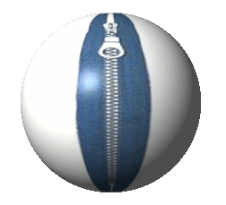

Dictionaries
Introduction
We have already become acquainted with lists in the previous chapter. In this chapter of our online Python course we will present the dictionaries and the operators and methods on dictionaries. Python programs or scripts without lists and dictionaries are nearly inconceivable. Like lists dictionaries can easily be changed, can be shrunk and grown ad libitum at run time. They shrink and grow without the necessity of making copies. Dictionaries can be contained in lists and vice versa. But what's the difference between lists and dictionaries? Lists are ordered sets of objects, whereas dictionaries are unordered sets. But the main difference is that items in dictionaries are accessed via keys and not via their position. A dictionary is an associative array (also known as hashes). Any key of the dictionary is associated (or mapped) to a value. The values of a dictionary can be any Python data type. So dictionaries are unordered key-value-pairs.Dictionary don't support the sequence operation of the sequence data types like strings, tuples and lists. Dictionaries belong to the built-in mapping type. They are the sole representative of this kind!
At the end of this chapter, we will show how a dictionary can be turned into one list, containing (key,value)-tuples or two lists, i.e. one with the keys and one with the values. This transformation can be done reversely as well.
Examples of Dictionaries
Our first example is the most simple dictionary, an empty dictionary:
>>> empty = {}
>>> empty
{}
In honour to the patron saint of Python "Monty Python", we'll have now some special
food dictionaries. What's Python without "ham", "egg" and "spam"?
>>> food = {"ham" : "yes", "egg" : "yes", "spam" : "no" }
>>> food
{'egg': 'yes', 'ham': 'yes', 'spam': 'no'}
>>> food["spam"] = "yes"
>>> food
{'egg': 'yes', 'ham': 'yes', 'spam': 'yes'}
>>>
Our next example is a simple German-English dictionary:
# -*- coding: iso-8859-1 -*-
en_de = {"red" : "rot", "green" : "grün", "blue" : "blau", "yellow":"gelb"}
print en_de
print en_de["red"]
The first line of the previous script is necessary to use the iso-8859-1 code with
German Umlaute. The file has to be saved in this coding as well.
What about having another language dictionary, let's say German-French? Now it's even possible to translate from English to French, even though we don't have an English-French-dictionary. de_fr[en_de["red"]] gives us the French word for "red", i.e. "rouge":
# -*- coding: iso-8859-1 -*-
en_de = {"red" : "rot", "green" : "grün", "blue" : "blau", "yellow":"gelb"}
print en_de
print en_de["red"]
de_fr = {"rot" : "rouge", "grün" : "vert", "blau" : "bleu", "gelb":"jaune"}
print "The French word for red is: " + de_fr[en_de["red"]]
We can use arbitrary types as values in a dictionary, but there is a restriction
for the keys. Only immutable data types can be used as keys, i.e. no lists or
dictionaries can be used:
If you use a mutable data type as a key, you get an error message:
>>> dic = { [1,2,3]:"abc"}
Traceback (most recent call last):
File "<stdin>", line 1, in <module>
TypeError: list objects are unhashable
Tuple as keys are okay, as you can see in the following example:
>>> dic = { (1,2,3):"abc", 3.1415:"abc"}
>>> dic
{(1, 2, 3): 'abc'}
Let's improve our examples with the natural language dictionaries a bit. We create a
dictionary of dictionaries:
# -*- coding: iso-8859-1 -*-
en_de = {"red" : "rot", "green" : "grün", "blue" : "blau", "yellow":"gelb"}
de_fr = {"rot" : "rouge", "grün" : "vert", "blau" : "bleu", "gelb":"jaune"}
dictionaries = {"en_de" : en_de, "de_fr" : de_fr }
print dictionaries["de_fr"]["blau"]
Operators on Dictionaries
| Operator |
Explanation |
|---|---|
| len(d) |
returns the number of stored entries, i.e.
the number of (key,value) pairs. |
| del d[k] |
deletes the key k together with his value |
| k in d |
True, if a key k exists in the dictionary d |
| k not in d |
True, if a key k doesn't exist in the dictionary d |
Accessing non Existing Keys
If you try to access a key which doesn't exist, you will get an error message:
>>> words = {"house" : "Haus", "cat":"Katze"}
>>> words["car"]
Traceback (most recent call last):
File "<stdin>", line 1, in <module>
KeyError: 'car'
You can prevent this by using the "in" operator:
>>> if "car" in words: print words["car"] ... >>> if "cat" in words: print words["cat"] ... Katze
Important Methods
A dictionary can be copied with the method copy():
>>> w = words.copy()
>>> words["cat"]="chat"
>>> print w
{'house': 'Haus', 'cat': 'Katze'}
>>> print words
{'house': 'Haus', 'cat': 'chat'}
The content of a dictionary can be cleared with the method clear().
The dictionary is not deleted, but set to an empty dictionary:
>>> w.clear()
>>> print w
{}
Update: Merging Dictionaries
What about concatenating dictionaries, like we did with lists? There is something
similar for dictionaries: the update method
update() merges the keys and values of one dictionary into
another, overwriting values of the same key:
>>> w={"house":"Haus","cat":"Katze","red":"rot"}
>>> w1 = {"red":"rouge","blau":"bleu"}
>>> w.update(w1)
>>> print w
{'house': 'Haus', 'blau': 'bleu', 'red': 'rouge', 'cat': 'Katze'}
Iterating over a Dictionary
No method is needed to interate over a dictionary:
for key in d: print keyBut it's possible to use the method iterkeys():
for key in d.iterkeys(): print keyThe method itervalues() is a convenient way for iterating directly over the values:
for val in d.itervalues(): print valThe above loop is of course equivalent to the following one:
for key in d: print d[key]
Connection between Lists and Dictionaries

If you have worked for a while with Python, nearly inevitably the moment will come,
when you want or have to convert lists into dictionaries or vice versa.
It wouldn't be too hard to write a function doing this. But Python wouldn't be Python,
if it didn't provide such functionalities.
If we have a dictionary
{"list":"Liste", "dictionary":"Wörterbuch", "function":"Funktion"}
we could turn this into a list with two-tuples:
[("list","Liste"), ("dictionary","Wörterbuch"), ("function","Funktion")]
Lists from Dictionaries
It's possible to create lists from dictionaries by using the methods items(), keys() and values(). As the name implies the method keys() creates a list, which consists solely of the keys of the dictionary. While values() produces a list consisting of the values. items() can be used to create a list consisting of 2-tuples of (key,value)-pairs:
>>> w={"house":"Haus","cat":"Katze","red":"rot"}
>>> w.items()
[('house', 'Haus'), ('red', 'rot'), ('cat', 'Katze')]
>>> w.keys()
['house', 'red', 'cat']
>>> w.values()
['Haus', 'rot', 'Katze']
If we apply the method items() to a dictionary, we have no information loss, i.e. it
is possible to recreate the original dictionary from the list created by items().
Even though this list of 2-tuples has the same entropy, i.e. the information content
is the same, the efficiency of both approaches is completely different. The dictionary
data type provides highly efficient methods to access, delete and change elements of the
dictionary, while in the case of lists these functions have to be implemented by the
programmer.
Dictionaries from Lists
Now we will turn out attention to the art of cooking, but don't be afraid, this remain a python course and not a cooking course. We want to show you, how to turn lists into dictionaries, if these lists satisfy certain conditions.We have two lists, one containing the dishes and the other one the corresponding countries:
>>> dishes = ["pizza", "sauerkraut", "paella", "Hamburger"] >>> countries = ["Italy", "Germany", "Spanien", "USA"]Now we will create a dictionary, which assigns a dish to a country, of course according to the common prejudices. For this purpose we need the function zip(). The name zip was well chosen, because the two lists get combined like a zipper.
>>> country_specialities = zip(countries, dishes)
>>> print country_specialities
[('Italy', 'pizza'), ('Germany', 'sauerkraut'), ('Spanien', 'paella'), ('USA', 'Hamburger')]
>>>
The variable country_specialities contains now the "dictionary" in the 2-tuple list form.
This form can be easily transformed into a real dictionary with the function dict().
>>> country_specialities_dict = dict(country_specialities)
>>> print country_specialities_dict
{'Germany': 'sauerkraut', 'Spanien': 'paella', 'Italy': 'pizza', 'USA': 'Hamburger'}
>>>
There is still one question concerning the function zip(). What happens, if one
of the two argument lists contains more elements than the other one?
It's easy: The superfluous elements will not be used:
>>> countries = ["Italy", "Germany", "Spanien", "USA", "Switzerland"]
>>> dishes = ["pizza", "sauerkraut", "paella", "Hamburger"]
>>> country_specialities = zip(countries,dishes)
>>> print country_specialities
[('Italy', 'pizza'), ('Germany', 'sauerkraut'), ('Spanien', 'paella'), ('USA', 'Hamburger')]
So in this course, we will not answer the burning question, what the national dish of
Switzerland is.